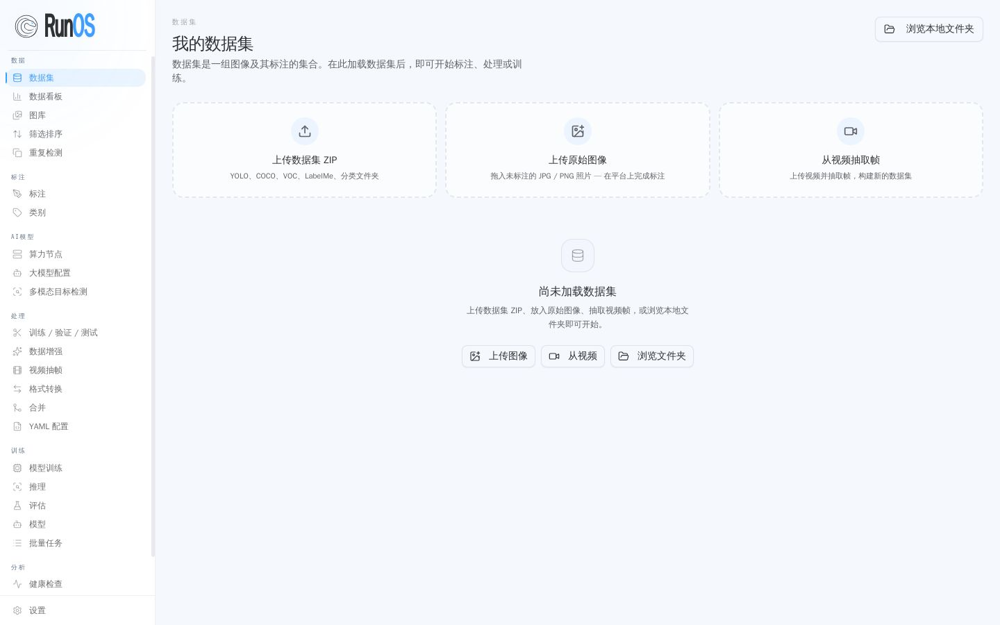
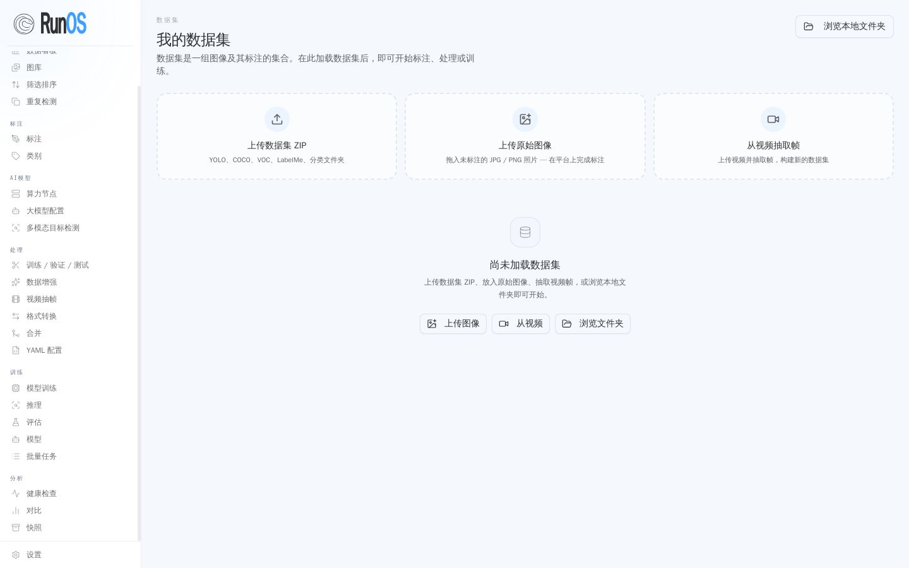
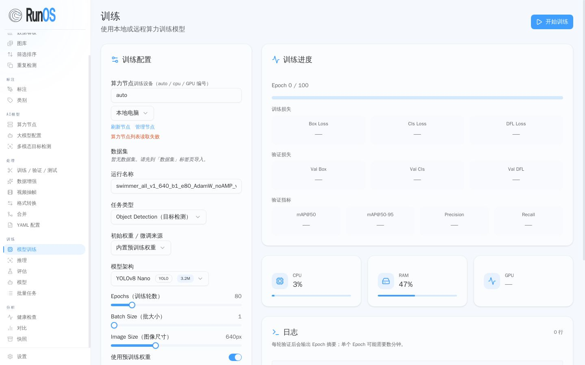
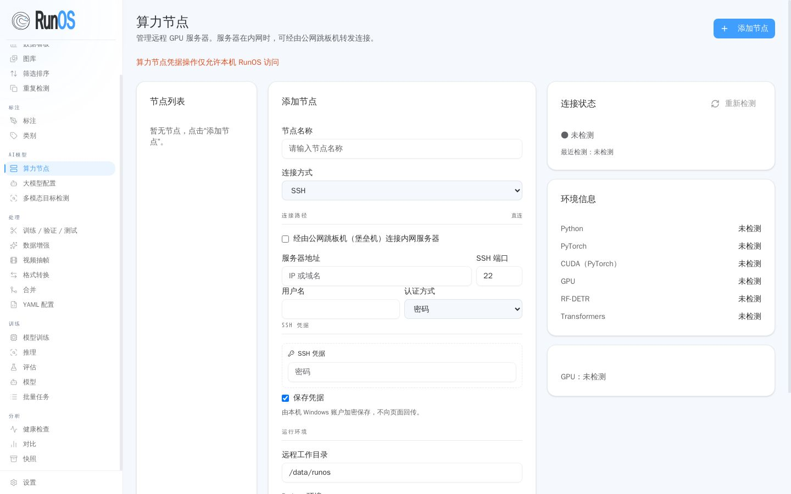
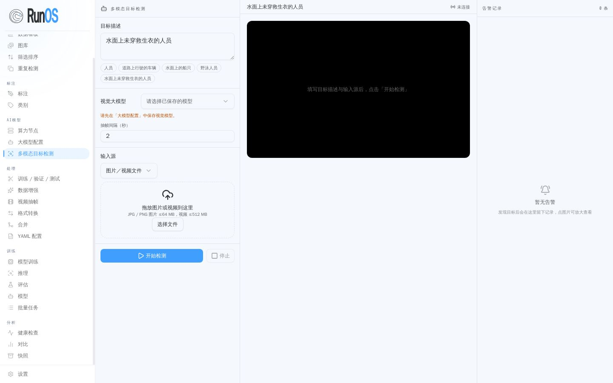
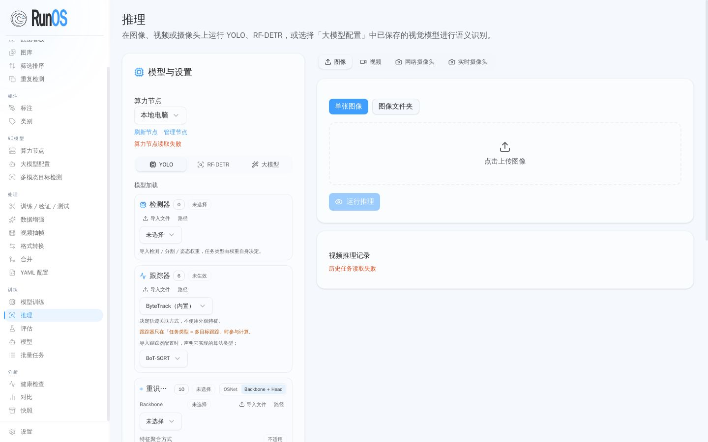
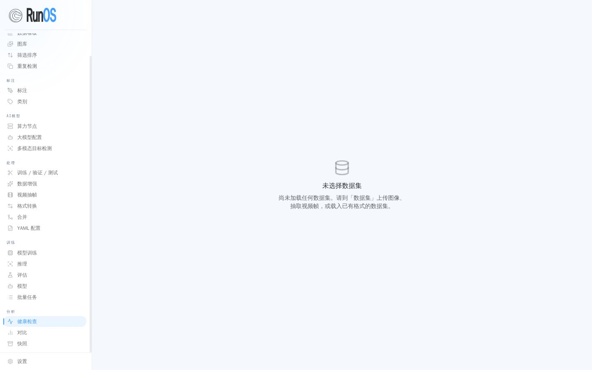

登录
独立部署默认本地单管理员登录，会话为 HMAC 签名 token，签名密钥首次启动生成并保存在数据卷，重启不失效。
数据集
数据集是一组图像及其标注的集合。支持上传数据集 ZIP（YOLO、COCO、VOC、LabelMe、分类文件夹）、上传原始图像、从视频抽帧、浏览本地文件夹。

标注
标注工作台：对数据集做框选与类别标注，并可接大模型自动标注。

模型训练
训练配置、进度跟踪、训练 / 验证损失曲线、mAP 等评测指标，以及 CPU / 内存 / GPU 资源监控。

算力节点
注册多台服务器作为算力节点：SSH 直连或经公网跳板转发连接内网服务器，训练与推理任务跨节点调度，并检测节点 Python、PyTorch、CUDA、GPU 环境。

多模态目标检测
视频与图像流的多模态大模型识别能力。

推理
用已训练模型做推理。

健康检查
系统健康检查视图。

能力一览
实时多模态识别
视频与图像流的多模态大模型识别与告警证据留存。
大模型自动标注
用大模型辅助标注，高效、低成本地生产标注数据。
算力节点跨服务器调配
多台服务器注册为节点，训练与推理跨节点调度。
多格式支持
YOLO、COCO、VOC、LabelMe、分类文件夹互转。
视频处理
视频抽帧、切片预览、平铺（tiling）处理。
训练与评测
YOLO / RF-DETR 等训练任务下发、进度跟踪、评测对比。
自己跑起来
完整源码在 GitHub（私有仓库）：github.com/melba818/runos
git clone git@github.com:melba818/runos.git cd runos cp .env.example .env # 先改掉演示密码 docker compose up -d --build
然后打开 http://127.0.0.1:19000 ，用 .env 里的账号登录（默认演示账号 admin / runos-demo）。一键部署验证的是服务链路；训练任务本身需要算力与模型权重，模型权重在运行时按需下载，大模型识别需要自备模型服务或 API 密钥。